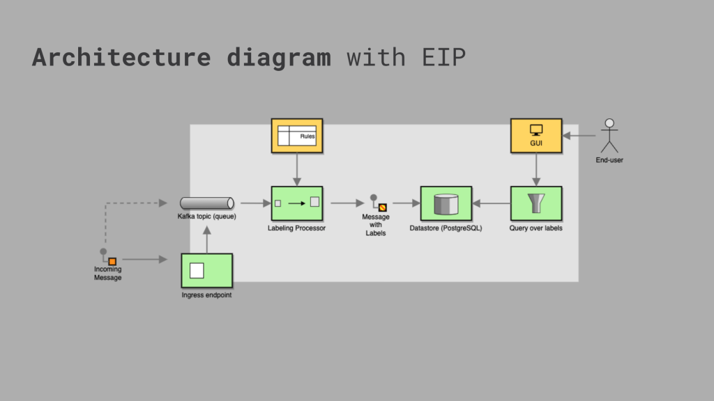
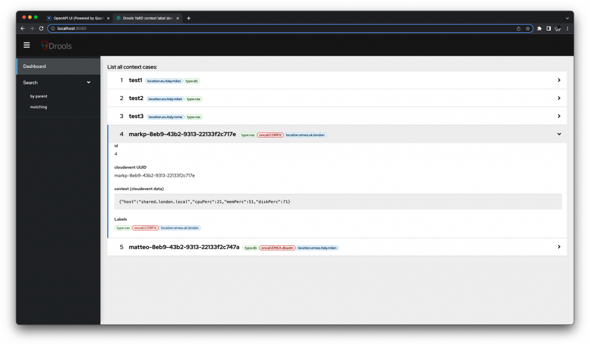
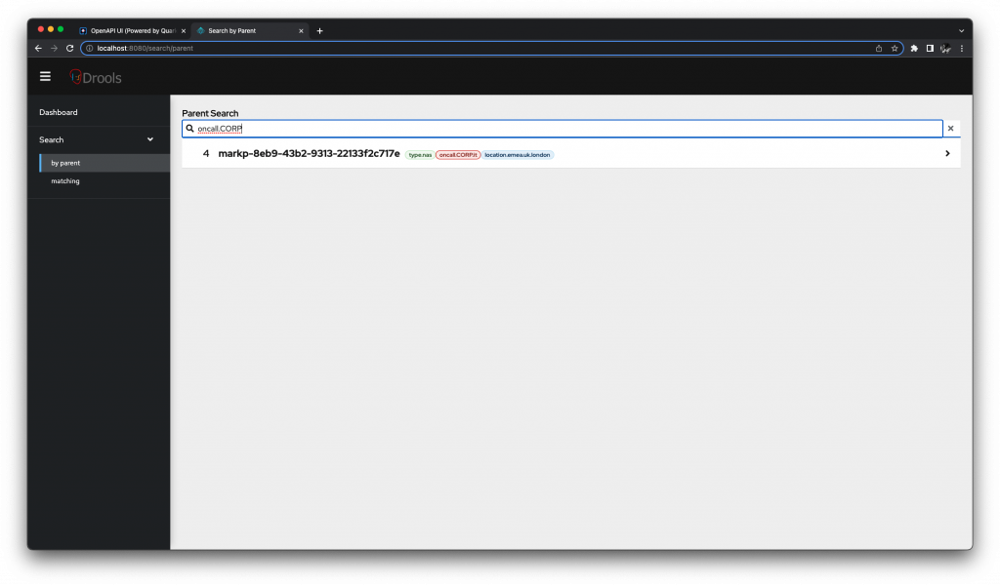
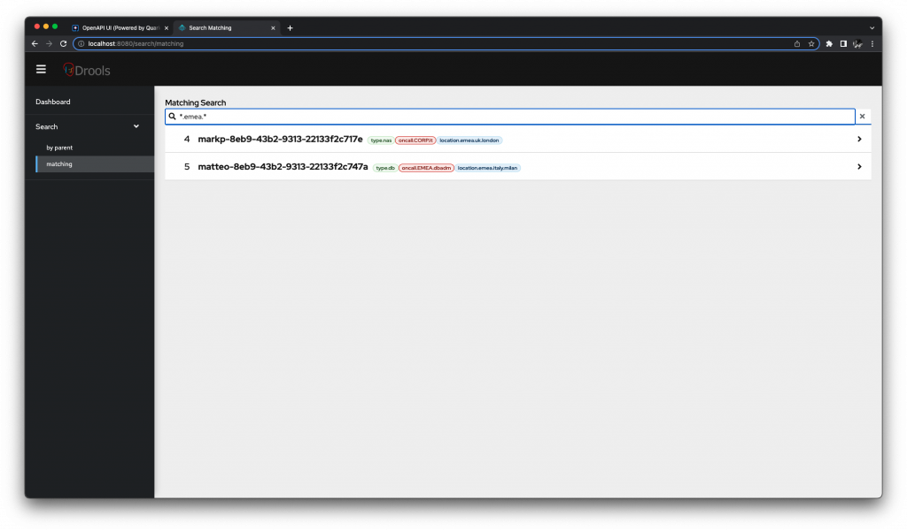

CloudEvents labeling and classification with Drools
This blog post is a quick update on a demo in labeling CNCF’s CloudEvents.
Introduction
Categorizing events is a general, common use-case; in the context of this post, we will delve into labeling CNCF’s CloudEvents for Intelligent Response Management (IRM) which can find application in several ways.
One way is to categorize and prioritize different types of events based on their urgency or importance; for example: a SRE team might label an event as "critical" if it involves a major service outage, or "low priority" if it is a minor issue of a sub-system that can be resolved at a later time. This allows the team to quickly respond to the most pressing issues and allocate resources accordingly.
Additionally, labeling events can also be used to track and analyze patterns in a system (or cluster) behaviors, which can help to identify potential problems before they occur and improve the overall reliability of the system by implementing corrective actions preventively.
This demo make use of several technologies:
- Drools and YaRD for the rule definition and evaluation
- Kogito for cloud native based decisioning
- Quarkus for cloud native Java development on top of Kubernetes
- CloudEvents –this is the format of the event data that we want to process
- Kafka as an event broker
- PostgreSQL as our data store; we’re using specifically PostgreSQL for very interesting query capabilities that this RDBMS can offer
- Hibernate types to define our custom types on top of PostgreSQL
- Quarkus Quinoa extension
- Patternfly for the web-based GUI
Architecture
The following is a high level diagram of the overall architecture for this demo:

On the left hand side, the incoming CloudEvents instance that we want to process by labeling, is received by the endpoint which represents one of the possible inputs for this application. The CloudEvents instance is then immediately placed on a kafka topic, which is used to better isolate the ingress portion of this application from the rest of the processing pipeline.
The processing pipeline starts with a labeling processor: this is the component responsible for applying the rules to enrich the CloudEvents instance with the required and applicable labels. As a result, the received message is now enriched with labeling and it gets persisted inside the data store.
PostgreSQL is used specifically here as it provides hierarchical labels via ltree data type and related query capabilities, which are very useful in categorization applications such as this one. These advanced query capabilities are also foundational to potentially re-process the same CloudEvents instance, after some further augmentation or additional manual labeling.
In the context of this article, the web-based GUI is provisional and will be used only as a practical demonstrator for the rich query capabilities.
Walkthrough
A CloudEvents instance is submitted to this application, for example:
{
"specversion": "1.0",
"id": "matteo-8eb9-43b2-9313-22133f2c747a",
"source": "example",
"type": "demo20220715contextlabel.demotype",
"data": {
"host": "basedidati.milano.local",
"diskPerc": 70,
"memPerc": 50,
"cpuPerc": 20
}
}The data context of the CloudEvents instance pertains to some host which came under supervision due to resource load. We now want to classify this context/case, using some labels. We may have more than one label. Each label is hierarchical (root.branch1.branch2.leaf).
We want to classify the hostname based on its relevance to the department, unit, person or team responsible for it. To do so, a simple decision table provides an easy solution. For example, we can classify the hostname based on geographical location or determine the type of server based on the hostname. Ultimately, we might want to setup a labeling rule for who’s on call, something like the following decision table using JQ expressions:
type: DecisionTable
inputs: ['.location', '.type']
rules:
- when: ['startswith("location.emea")', '. == "type.db"']
then: '"oncall.EMEA.dbadm"'
- when: ['startswith("location.emea") | not', '. == "type.db"']
then: '"oncall.CORP.dbadm"'
- when: ['true', '. == "type.nas"']
then: '"oncall.CORP.it"'For example, a CloudEvents context may be labeled as follows:
- type.db
- location.emea.italy.milan
- oncall.EMEA.dbadm
For the PostgreSQL DDL we currently have:
Table "public.cecase"
Column | Type | Collation | Nullable | Default
---------+------------------------+-----------+----------+---------
id | bigint | | not null |
ceuuid | character varying(255) | | |
context | jsonb | | |
mytag | ltree[] | | |
Indexes:
"cecase_pkey" PRIMARY KEY, btree (id)
"mytag_gist_idx" gist (mytag)
"mytag_idx" btree (mytag)Please notice we’re taking advantage here of PostgreSQL’s jsonb for storing the original CloudEvents context, and ltree[] data type for searching ad-hoc with indexing the hierarchical labels.
The latter is extremely helpful also to setup queries making use of kbd><@</kbd and ~ operators for PostgreSQL which performs on the ltree data type, showcased below.
As the data flows into the application, we can use the provisional web-based GUI which provide a convenient way to consume the backend REST API(s) developed on Quarkus:

In the screenshot above, you can access all the records from the table, where the labels have been applied by the rule definition.
We can browse by having at least one label having the specified parent, with a query like:
SELECT * FROM cecase WHERE mytag <@ 'oncall.CORP'For example, if we want all the records having at least a label for the oncall.CORP rooting:

We can browse by having at least one label having the specified ltree, with a query like”
SELECT * FROM cecase WHERE mytag ~ *.emea.*For example, if we want all the records having at least a label for the .emea. (a branch named emea in any point in the hierarchical label):

Don’t forget to check out the video linked above, as it demonstrates the demo working live as the data is being sent to the application!
If you want to checkout the source, here is the code repo: https://github.com/tarilabs/demo20220715contextlabel#readme
These advanced query capabilities offered by PostgreSQL can be used as a foundation to identify events due to reprocessing, manual inspection, triggering a workflow, etc. …but that is maybe subject for a second iteration on this demo…
Conclusions
This demo showcases the power of combining declarative logic, persistence and other technologies to process and label CloudEvents effectively! We defined our logic using a combination of expression and rules in the form of decision tables, combined with the use of PostgreSQL as a data store thanks to its advanced query capabilities, allowing for a more efficient and effective handling of the events.
We hope you enjoyed our demo and look forward to hearing your feedback!